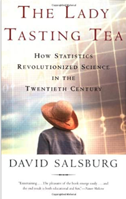
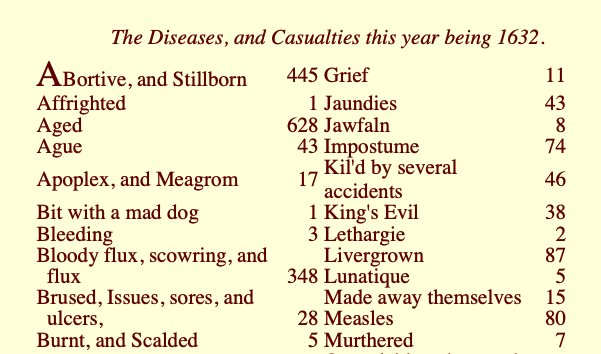
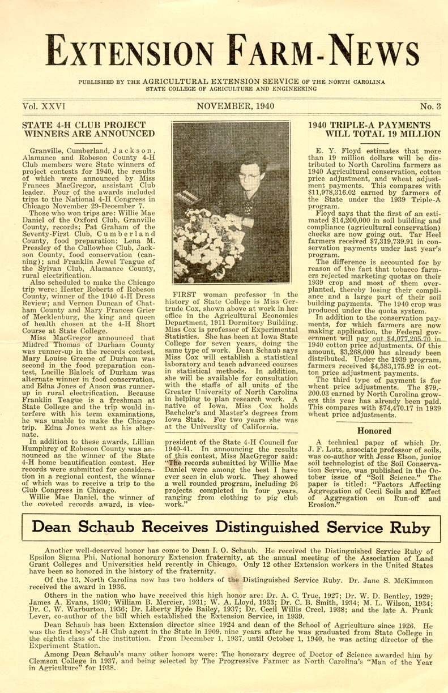
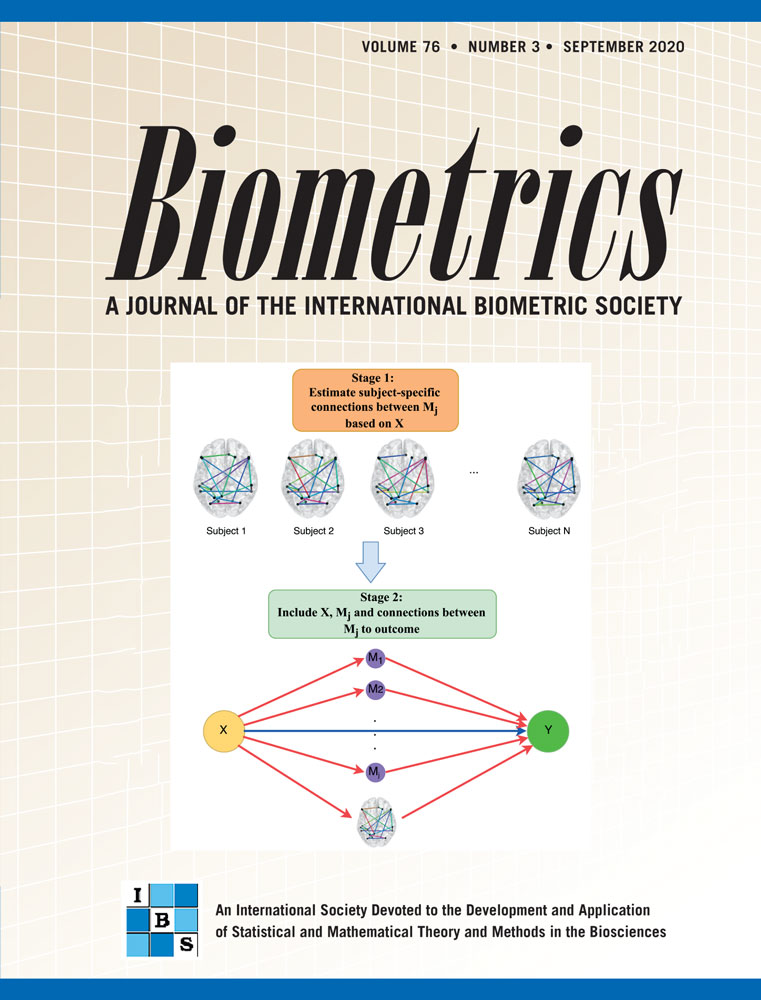

Capítulo 5 Historia breve de la Estadística
Fecha de la última revisión
## [1] "2026-08-13"


5.1 La dama degustando té
Era una tarde de verano en Cambridge, Inglaterra, a finales de la década de 1920. Un grupo de profesores universitarios, sus esposas y algunos invitados estaban sentados alrededor de una mesa al aire libre para tomar el té de la tarde. Una de las mujeres insistía en que el té era diferente dependiendo de si el té se vertía en la leche o si la leche se vertía en el té. Las mentes científicas entre los hombres se burlaron de esto como una tontería. ¿Cual podría ser la diferencia? No podían concebir ninguna diferencia en la química de las mezclas que pudieran existir. Un hombre delgado y bajo, con anteojos y una barba de Vandyke que empezaba a ponerse gris, se abalanzó sobre el problema. “Probemos esta propuesta”, dijo emocionado. Comenzó a esbozar un experimento en el que a la señora que insistía en que había una diferencia se le presentaría una secuencia de tazas de té, en algunas de las cuales se había vertido la leche en el té y en otras se había vertido el té en la taza de leche. Cuento del libro de “The Lady Tasting Tea: How Statistics Revolutionized Science in the Twentieth Century” por David Salsburg. Traducido con la página de Google Translate.
Así comienza el libro de Salsburg (2001), para describir el comportamiento de los científicos cuando están animados de su tema y el deseo de resolver un enigma. Esa persona con barba de Vandyke era Ronald Aylmer Fisher (1890–1962), reconocido como uno de los responsables de la estadística moderna y una de las personas más importantes del área en el siglo XX. Sus contribuciones han tenido un impacto en muchas áreas, incluyendo la genética mendeliana y la selección natural.
5.2 Definición de lo que es la estadística
La estadística es la ciencia de recolectar, describir y analizar datos para extraer conclusiones e inferir en presencia de incertidumbre.
La estadística es un área de la ciencia de datos que utiliza valores numéricos para evaluar patrones y inferir situaciones futuras. Esta definición es sencilla, pero incluye muchos temas; lo más importante es el componente de utilizar datos, resumirlos en índices o parámetros y usarlos para predecir/inferir el futuro. La palabra estadística, usada en un sentido más o menos similar a su definición de hoy, probablemente se origina del alemán Statistik, acuñada por Gottfried Achenwall (1749), donde el término se refería a la descripción de datos del Estado. No fue hasta 1791, con Sir John Sinclair, que el término comenzó a utilizarse para la descripción de conjuntos de datos en general, sin limitarse a los datos de un estado o país.
La palabra estadística proviene del alemán Statistik (Gottfried Achenwall, 1749), originalmente ligada a la descripción del Estado. Recién en 1791 Sir John Sinclair la usó para conjuntos de datos en general.
5.3 Introducción a la historia de la Estadística
A principios del siglo XVIII, el término estadística servía para designar la colección de información sobre la población y la economía de diferentes regiones o países. En este periodo el objetivo era tabular la información, por ejemplo cuánta gente hay en un área, cuántas vacas hay, cuánta gente es parte de la nobleza.
Por ejemplo, uno de los primeros estudios para determinar la estadística de una población fue hecho por John Graunt (1662), titulado Natural and Political Observations Made upon the Bills of Mortality y puede encontrar el libro original aquí http://www.neonatology.org/pdf/graunt.pdf. En el libro expone que 1/3 de los niños muere antes de los 16 años en Londres, Inglaterra.
Aquí un extracto de una de estas tablas de las causas de enfermedades y mortandad en Londres en el año 1632. Note que antes de este trabajo estos datos eran muy raros e inexistentes en la mayoría de las ciudades o países.
Note algunas causas principales de mortandad: “Aged” (628), es decir personas de edad mayor, y “Abortive and Stillborn” (nacidos muertos, 445). Algo que hoy se consideraría raro es morir de “grief”, o sea de tristeza (11).

Figure 5.1: Tablas de mortalidad de Graunt (1632)
El otro componente importante de la estadística fue el desarrollo de las probabilidades en el siglo 17 y 18. A la gente le gustaba (como hoy en día) hacer apuestas y jugar a las cartas por dinero. Muchos trataban de entender las probabilidades de ganar en estos juegos de azar para aumentar sus posibilidades.
5.4 Gertrude Mary Cox
Trabajo presentado por Abimelys Anaya (estudiante de la Universidad de Puerto Rico en Humacao)
Gertrude Mary Cox fue una destacada e importante estadística estadounidense. Nació el 13 de enero de 1900 en una granja cerca de Dayton, Iowa; y falleció a los 78 años, el 17 de octubre de 1978 en Durham, Carolina del Norte, a causa de leucemia. Compartiendo su hogar con 3 hermanos, se dice que su familia era muy unida, pero Cox era específicamente más cercana a su madre, Hemma, de quien heredó su pasión por ayudar a los demás.
Cursó sus primeros estudios en la llamada Perry High School de la misma ciudad. Su amor por los deportes competitivos, hizo que formara parte del equipo de baloncesto en dicha escuela. No fue hasta 1925, luego de haber trabajado un tiempo como diaconisa de la Iglesia Metodista, que sintió interés en continuar estudios graduados en Iowa State College en Ames con concentración en matemáticas, debido a que su cargo en la iglesia requería un grado universitario. Logrando así en 1931, alcanzar una maestría en estadística. Desde ese mismo año hasta el 1933, terminó estudios de posgrado en estadística psicológica en la Universidad de California. Posteriormente, regresa a Iowa, donde participó en la inauguración del Laboratorio de Estadística y comienza su investigación con base en el diseño experimental. Fue dicha carrera y el empeño depositado en la misma, quien le permitió dejar una gran aportación en procesos que utilizamos y que conocemos hoy día de esta rama de la ciencia.
5.4.1 Primera dama en Estadística
En 1939, la nombraron profesora asistente en Iowa State College y, en 1940, dirigió el primer departamento de Estadística Experimental en la Escuela de Agricultura de la Universidad de Carolina del Norte. Esto la convirtió en la primera mujer directora del recinto. Además, Cox fue la primera mujer jefa del Instituto de Estadística de la Universidad de Carolina del Norte en 1944. Un año más tarde, participó como editora principal de la revista Biometrics durante 10 años, y fundó, en 1947, la International Biometric Society. Además, se convirtió en presidenta de la ASA (American Statistical Association) en 1956.

5.4.2 Revista Biometrics

La revista7 fue publicada por la Sociedad Internacional de Biometría en 1945, originalmente bajo el título de Biometrics Bulletin. Sin embargo, en 1947, su nombre fue acortado. Su objetivo principal consiste en publicar artículos sobre la aplicación de la estadística y las matemáticas a las ciencias biológicas. Según una encuesta realizada por especialistas en BioEstadística, obtuvo el quinto lugar entre 40 revistas de estadística existentes.
5.4.3 Libro: Diseños Experimentales
¿Qué es el diseño experimental? Este consiste en la identificación y cuantificación de las causas de un efecto provocado sobre otra variable de interés durante un estudio experimental.
En 1950, Gertrude M. Cox junto a William Cochran, publicó Experimental Design, libro utilizado por años, y que actualmente permanece accesible, como primera referencia para el diseño experimental. En este, podemos encontrar la expansión de sus notas mimeografiadas de las clases de diseño que brindaba a sus estudiantes. El libro enfatiza tres principios: (1) los estadísticos deben participar en la investigación desde las etapas de planificación, es decir, primeros pasos, el establecimiento de los objetivos del experimento y la planificación del análisis; (2) aleatorizar todo lo que se pueda aleatorizar; y (3) utilizar el bloqueo, siempre que sea posible, para reducir los efectos de variabilidad, donde los bloques son grupos homogéneos de unidades experimentales.
Según menciona Sharon L. Lohr en un artículo para ¨Notices of the American Mathematical Society¨4, en él ¨podemos encontrar planos detallados para el cuadrado latino, factorial, factorial fraccional, parcela dividida, celosía, bloque incompleto balanceado y otros diseños. Cada descripción de diseño comenzaba con ejemplos, seguida de una discusión sobre cuándo el diseño era adecuado e instrucciones detalladas de cómo realizar la aleatorización. Luego, vino uno o más estudios de casos detallados, que muestran por qué ese diseño había sido elegido para cada experimento y cómo había sido aleatorizado, tomando al lector paso a paso a través de los cálculos necesarios para construir el análisis de varianza y estimar los errores estándar para diferencias de medias de tratamiento. Los autores también discutieron cómo estimar la eficiencia del diseño en relación con un diseño completamente aleatorio y cómo hacer los cálculos para la estructura desequilibrada que resultó cuando uno o más ejecuciones experimentales tenían datos faltantes¨.
5.4.4 Últimas aportaciones
Gertrude M. Cox se retiró en 1960 del Instituto de Estadística, para dirigir la División de Investigación Estadística del RTI (Research Triangle Institute), donde fue asesora desde el 1965. Finalmente, se dedicó a distribuir sus conocimientos en estadística al exterior. Realizó 23 viajes internacionales, entre los cuales se encontraban los países de Egipto y Tailandia.
Otros reconocimientos
1944 - Socia de la Asociación Americana de Estadísticas y del Instituto de Estadísticas Matemáticas.
1949 - Primera mujer electa en el Instituto Internacional de Estadística.
1957 - Socia de honor de ¨Royal Statistical Society¨.
1959 - Recibe premio O. Max Gardner por parte de la Universidad de Carolina del Norte por su “contribución al bienestar de la raza humana”.
1975 - Electa en la Academia Nacional de Ciencias.
1977 - La universidad de Carolina del Norte, creó una beca de investigación de $200,000 en su honor.
Defendió el uso de computadoras electrónicas para el trabajo estadístico.
Sin lugar a dudas, fue pionera de lo que actualmente nos permite, de manera fácil, realizar investigaciones cuantitativas y que son, y han sido desde entonces, de suma importancia para nuestro entendimiento en las ciencias biológicas.
5.4.5 Referencias
1 Anderson, R.L. (1900-1978). Gertrude Mary Cox. Recuperado el 13 de septiembre de 2020, de http://www.nasonline.org/publications/biographical-memoirs/memoir-pdfs/cox-gertrude.pdf
2Biometrics (journal). (2020). Recuperado el 13 de septiembre de 2020, de https://en.wikipedia.org/wiki/Biometrics_(journal)
3Gertrude Cox. (2020). Recuperado el 13 de septiembre de 2020, de https://es.wikipedia.org/wiki/Gertrude_Cox
4 Lohr, S.L. (2019). Gertrude M. Cox and Statistical Design. Recuperado el 13 de septiembre de 2020, de https://www.ams.org/journals/notices/201903/rnoti-p317.pdf
5 Mujeres con ciencia. (2014). Gertrude Cox, la primera dama de la Estadística. Recuperado el 13 de septiembre de 2020, de https://mujeresconciencia.com/2014/06/09/gertrude-cox-la-primera-dama-de-la-estadistica/
6 Universidad de Colima. (2020). Diseño experimental. Recuperado el 13 de septiembre de 2020, de https://recursos.ucol.mx/tesis/diseno_experimental.php
7 Welsh, A., Ghosh, D., Brewer, M. y Molenberghs, G. (1999-2020). Biometrics, Journal of the International Biometric Society. Recuperado el 13 de septiembre de 2020, de https://onlinelibrary.wiley.com/journal/15410420
5.5 Algunos personas importantes
- Trabajo grupo de 2: 10 puntos. PARTE de las destrezas que estará aprendiendo en adición de conocer un estadístico es como preparar un documento en .Rmd para hacer una documento. Se someterá tanto el documento en .html y .Rmd en MSTeam.
Se seleccionará uno de las personas abajo y se hará una pequeña biografía sobre esta persona (3 paginas). Debe incluir diferentes componentes. - Información personal de la persona
- Su carrera de estudio
- Su aportación a la estadística
- Cual método estadístico desarrolló (seleccioné uno para explicar, aunque puede mencionar múltiples).
- Por qué este método fue innovador
- Cuantos papers a publicado (busca en Google scholar)
- Pon una formulas matemáticas con explicaciones de una de las aportaciones en estadística.
- fotos/pintura de la persona
- literatura citada
- El trabajo debería ser montado en .Rmd
5.6 Lista de estadísticos
- Florence Nightingale
- Gertrude Mary Cox
- Enid Charles
- Grace Wahba
- Ronald Fisher
- Reverand Thomas Bayes
- John Tukey
- Karl Pearson
- Carl Gauss
- Bradley Efron
- Andrey Nikolayevich Kolmogorov
- Pierre-Simon Laplace
- George Box
- Francis Galton
- Andrey Markov
- Samuel S. Wilks
5.7 Formula
Vea este enlace.
https://rpruim.github.io/s341/S19/from-class/MathinRmd.html
Localizado en el centro y una linea parte \[\sum_{n=1}^{10} n^2\]
Localizado en la misma linea \(\sum_{n=1}^{10} n^2\)